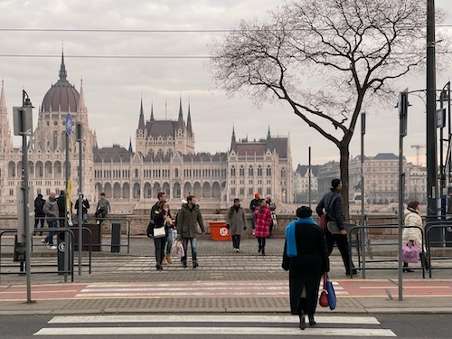
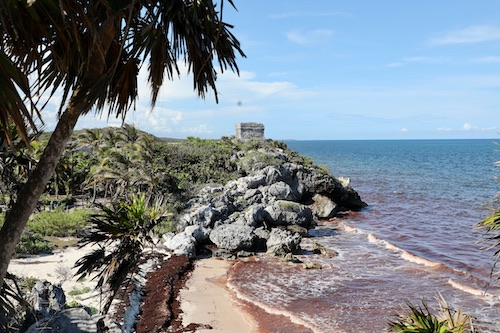
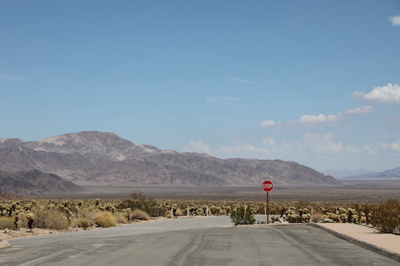
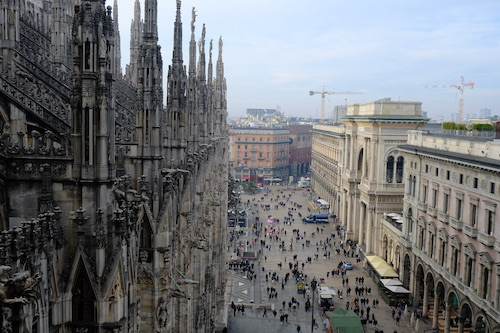
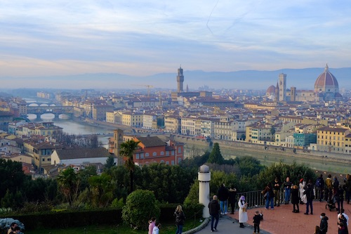
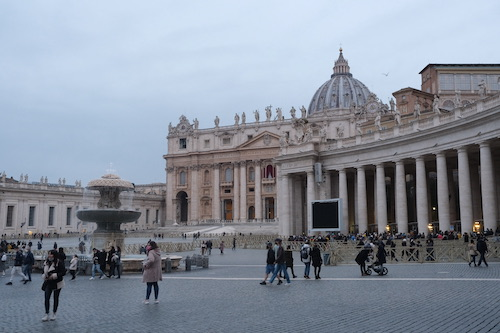
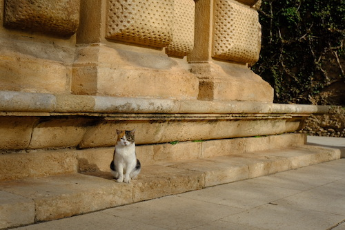
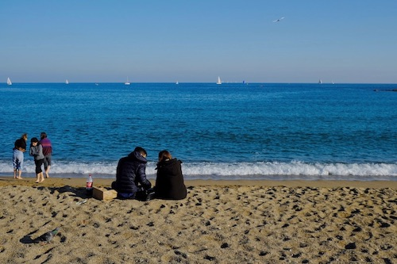

I love photography, armed with my trusty sidekicks: the Canon 5D Mark IV and the Fujifilm XT30. These two
cuties
have been my companions on countless journeys, capturing oodles of precious memories along the way.
Gallary

in Budapest, Hungary | Jan 2023 | by iPhone 11

in Cancun, Mexico | Jun 2022 | by Canon 5D Mark IV

in Joshua Tree, CA, US | Aug 2022 | by Canon 5D Mark IV

in Milan, Italy | Jan 2022 | by Fujifilm XT30

in Florence, Italy | Jan 2022 | by Fujifilm XT30

in Vantican | Jan 2022 | by Fujifilm XT30

in Granada, Spain | Dec 2021 | by Fujifilm XT30

in Barcelona, Spain | Dec 2021 | by Fujifilm XT30